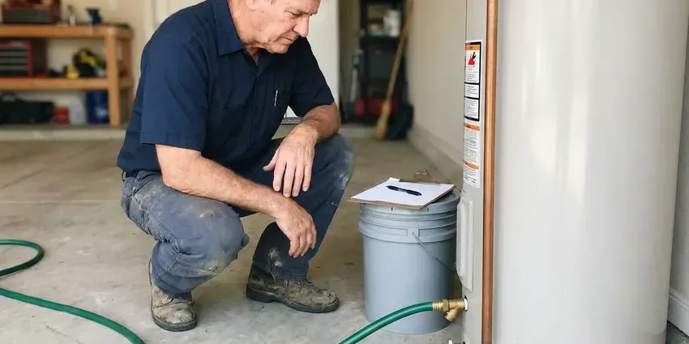

Commercial Plumbing in Turlock, CA
FBL Plumbing delivers dependable commercial plumbing solutions for businesses across Turlock, CA.
- Licensed & Insured
- Upfront Pricing
- Fast Commercial Service
- Fast Commercial Service

Your Local Commercial Plumbers in Turlock, CA.
Contact us for skilled plumbing solutions tailored to your commercial property's unique requirements.
Responsive Commercial Plumbing That Limits Downtime in Turlock, CA
FBL Plumbing provides commercial plumbing for restaurants, medical offices, retail centers, schools, warehouses and apartment complexes. We handle backflow testing, grease interceptor service, flushometer and restroom repairs, commercial water heaters, drain jetting and tenant improvement plumbing.
Our expertise includes:
- High-efficiency commercial water heater repair and replacement
- Commercial drain clearing and hydro-jetting
- Annual backflow prevention assembly testing, repair and city reporting

Additional Plumbing Maintenance Services in Turlock, CA
Our maintenance and specialty plumbing services in Turlock, CA catch small problems before they become emergencies.


Water Heater Maintenance in Turlock


Customers
Why Choose FBL Plumbing for Commercial Plumbing in Turlock, CA?
We offer scheduled maintenance plans that catch problems early and keep your property ready for inspections. One call takes care of multiple locations.
- Specialized Tools, Our technicians work with industrial-grade equipment like hydro-jetters and video inspection cameras for thorough commercial diagnostics and repairs.
- Detailed Records, You get invoices, photos and test reports for each service visit.
- Code Compliance, All our commercial plumbing work strictly adheres to local Turlock codes and Northern California regulations, protecting safety and legality for your business.
Citywide Coverage
No matter where your commercial property is located within Turlock, our skilled plumbers are just a call away. We provide complete commercial plumbing coverage, keeping quick response times for businesses across the entire Turlock area.
Experienced Team
Our commercial plumbing team at FBL Plumbing consists of well-trained and certified professionals with extensive experience in industrial and commercial systems. They receive continuous training on the latest technologies and code updates to better serve your business.
Safety-First Approach
We follow commercial plumbing codes, backflow requirements and health department rules for food service sites. Our crews use lockout procedures and proper confined space practices when needed.
Trusted Certified Turlock Plumbing Services Professionals
At FBL Plumbing, we take pride in providing licensed, certified plumbing services throughout Turlock, CA. Backed by leading industry credentials, our experienced plumbers combine technical skill with genuine customer care. Whether it is repair, installation, or maintenance, we follow strict safety and quality standards to deliver lasting results you can trust.
Call Us Now PHCC Plumbing Contractor Recognition
PHCC Plumbing Contractor Recognition Better Business Bureau (BBB) Accreditation
Better Business Bureau (BBB) Accreditation Angi Certified Pro
Angi Certified Pro ISO 9001 Quality Management Certification
ISO 9001 Quality Management CertificationTrusted Commercial Plumbing Services in Turlock, CA
Tenant Improvement and Build-Out Plumbing in Turlock, CA
When a space changes hands, the plumbing often needs to change too. We install new restrooms, break rooms, mop sinks and kitchen fixtures for tenant improvements. Our team works from your plans, coordinates with general contractors and passes inspections on time. We also cap and abandon old lines correctly.

Grease Trap Installation & Cleaning in Turlock
Restaurants and food service establishments in Turlock rely on properly functioning grease traps to prevent fats, oils, and grease (FOG) from entering the sewer system. FBL Plumbing offers expert grease trap installation, repair, and regular cleaning services. We make sure your grease trap is correctly sized for your business's needs and maintained to comply with local FOG regulations, preventing costly blockages and potential fines from the city.
Sewer Line Repair & Replacement for Businesses in Turlock, CA
The main sewer line is crucial for waste disposal at any commercial property in Turlock, CA. FBL Plumbing provides complete sewer line services, including trenchless repair options like pipe lining and bursting, which minimize excavation and disruption to your business's property. We address issues like root intrusion, collapsed pipes, and severe blockages, ensuring your commercial sewer system functions efficiently and reliably.
Commercial Restroom Plumbing in Turlock
Busy restrooms take a beating, and a broken flushometer or leaking urinal annoys customers. We repair and replace Sloan and Zurn flush valves, sensor faucets, wall-hung toilets and carriers. We also install ADA-compliant fixtures and grab bar backing during remodels. Quick repairs keep your facilities clean and open.
Backflow Prevention Device Services in Turlock
Backflow prevention devices are critical for protecting the public water supply from contamination, a significant concern for commercial properties in Turlock. Most water providers require annual testing and certification of these devices. Our certified plumbers provide complete testing, repair, and installation of backflow preventers, ensuring your business remains compliant and safe. We handle all types, including reduced pressure zone (RPZ) assemblies and double check valve assemblies, which are common in commercial and industrial applications. Keeping these devices in good working order is a basic safety measure.
Commercial Plumbing Costs and Maintenance Plans in Turlock, CA
Backflow tests typically cost $75 to $175 per assembly, while grease line jetting often runs $350 to $900 depending on length and buildup. Emergency after-hours service carries a higher rate. Preventive maintenance plans spread costs evenly and reduce surprise repairs. We give you written proposals so you can budget with certainty.
Backflow Prevention Testing & Repair in Turlock
Protecting your potable water supply from contamination is critical for any commercial property in Turlock. FBL Plumbing provides comprehensive backflow prevention device testing, certification, and repair services. Our certified technicians ensure your backflow preventers are functioning correctly and meet all local health department regulations, preventing harmful substances from entering the public water system and safeguarding your employees and customers.

Commercial Water Heater Repair & Installation in Turlock, CA
Commercial water heaters are often larger, more complex, and operate under greater stress than residential units, often requiring specialized repair and maintenance. We service all major brands including A.O. Smith, Rheem, and Bradford White commercial models, ensuring your business has a consistent supply of hot water. Whether it's a gas, electric, or tankless system, our technicians are trained in diagnosing issues like pilot light failures, heating element malfunctions, or pressure relief valve problems specific to high-demand commercial use in Turlock. Proper sizing and installation are essential for efficiency and longevity.
Commercial Plumbers Near Me in Turlock, CA
We are dedicated to providing fast and efficient commercial plumbing solutions across Turlock, CA. Our technicians are carefully dispatched to ensure quick response times, minimizing disruptions to your business. Trust FBL Plumbing to be your accessible, trusted commercial plumbing expert, ready to serve your property with skill and precision.
When you search for "commercial plumbing near me" in Turlock, CA, you want a dependable, local company that understands the specific needs of Northern California businesses. FBL Plumbing is your community partner, offering prompt and professional service right in your neighborhood. Our local expertise means we're familiar with the common commercial plumbing challenges posed by local water conditions and building codes.
FBL Plumbing at a Glance
- Fully licensed plumbing team covering Turlock, CA
- Same-day appointments and 24/7 emergency response
- Clear written estimates, no hidden fees
- 4.8-star rated by 834+ Northern California customers
Turlock Map
Turlock Information
- Population
- 72,100
- Area codes
- 209/559/661
- Service area
- Turlock and communities within 40 miles
- Nearby
- Ceres, Modesto, Merced, Manteca
For businesses in Turlock, CA, commercial plumbing handles far more daily use than a home system, so it needs sturdy parts and regular care. Wet winters and long dry summers define the plumbing calendar in Northern California, with drainage problems in the rainy season and outdoor leaks in summer.
Expert Services
Trust our professionals for reliable FBL Plumbing solutions in Turlock, CA.
Our Specialized Plumbing Services in Turlock, CA
At FBL Plumbing, we provide a complete range of plumbing services across Turlock, CA. From leak detection to full system installations, our team ensures fast, precise, and affordable service for both residential and commercial properties. Explore our core services below:


How Our Commercial Plumbing Process Works in Turlock, CA
At FBL Plumbing, our commercial plumbing process in Turlock, CA is designed for efficiency and minimal disruption to your business.
Request a Quote
Contact FBL Plumbing at (669) 319-2034 to schedule a commercial plumbing service or request an emergency response. We'll gather details about your problem and dispatch a qualified technician to your Turlock business.
On-Site Assessment
Our commercial plumber arrives promptly to your business in Turlock, conducting a thorough diagnosis of the plumbing problem using specialized tools. We will clearly explain the issue and propose the most effective solution.
Expert Service
With your approval, our technician will perform the necessary commercial plumbing repairs, installations, or maintenance. We use high-quality parts and follow industry best practices, ensuring lasting results for your Turlock business.
Frequently Asked Questions About Commercial Plumbing in Turlock
The cost of commercial plumbing services in Turlock, CA varies widely depending on the complexity of the job. Minor repairs like a clogged drain might range from $150 to $400, while a commercial water heater replacement could be $2,000 to $8,000 or more. We provide transparent, upfront pricing after a thorough on-site assessment.
FBL Plumbing stands behind the quality of our commercial plumbing work. We offer a solid warranty on both parts and labor for all services performed. The specific terms of the warranty will be clearly outlined in your service agreement, providing peace of mind for your project.
Yes, we offer plans covering backflow testing, drain jetting, water heater flushing and fixture inspections. Contracts help control costs and prevent emergencies.
Slow floor drains, gurgling toilets, sewer odors and repeated backups point to buildup or line damage. A camera inspection shows exactly what is wrong.
Yes, we install plumbing from plans, pull permits and coordinate with your general contractor. We schedule inspections to keep your opening date on track.
The frequency of commercial drain cleaning in Turlock depends heavily on the type of business. Restaurants, for example, may need quarterly or even monthly hydro-jetting due to grease accumulation. Office buildings might only require annual cleaning. Preventive maintenance prevents costly emergencies and keeps your business running smoothly.
Hydro-jetting is a powerful drain cleaning method that uses high-pressure water streams to completely clear commercial pipes of blockages, grease buildup, and debris. It's very effective for commercial kitchens and other businesses in Turlock that accumulate significant FOG (fats, oils, and grease), providing a much more complete clean than traditional snaking.
FBL Plumbing services and installs all major brands of commercial water heaters common in Northern California, including AO Smith, Rheem, Bradford White, and State Water Heaters. Our technicians are trained on the latest models and technologies to provide efficient and reliable hot water for your business.
What People Are Saying About Our Plumbing Experts?

Daniel K.
A pipe burst at 11 pm and they actually answered. The plumber showed up within the hour, shut everything down, and had us back to normal the next morning. Could not ask for more.
Emergency Plumbing · Stockton, CA
Laura S.
I scheduled a water heater replacement, and the team made the process smooth and affordable. The new unit works perfectly, and they cleaned up after completing the job.
Water Heater Replacement · Manteca, CA
Emily R.
I called FBL Plumbing for plumbing repair, and the technician was fast, polite, and thorough. They explained the problem clearly and fixed it the same day. I will definitely hire them again. Highly recommended!
Plumbing Repair · Modesto, CASofia M.
Two new toilets installed in one visit, no mess left behind, and the tech even adjusted a faucet he noticed was dripping. Fair pricing and really friendly.
Toilet Installation · Tracy, CA
James P.
Our commercial plumbing system had a leak under the sink, and FBL Plumbing handled it professionally. The plumbers arrived quickly and restored everything without disruption to our customers.
Commercial Plumbing · Manteca, CARobert G.
The trenchless sewer replacement saved our front yard. They walked us through the camera inspection footage first so we knew exactly what we were paying for.
Sewer Line Replacement · Tracy, CA